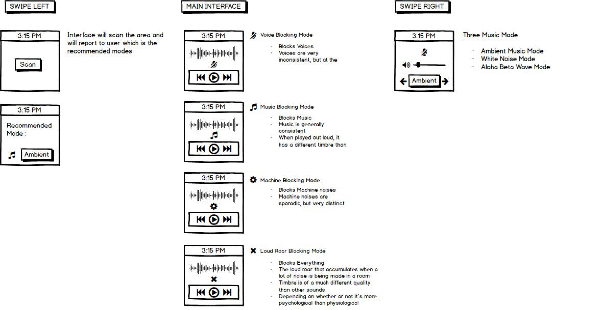
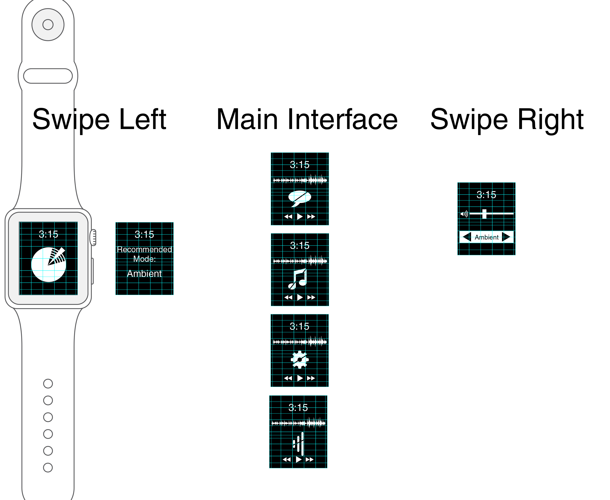
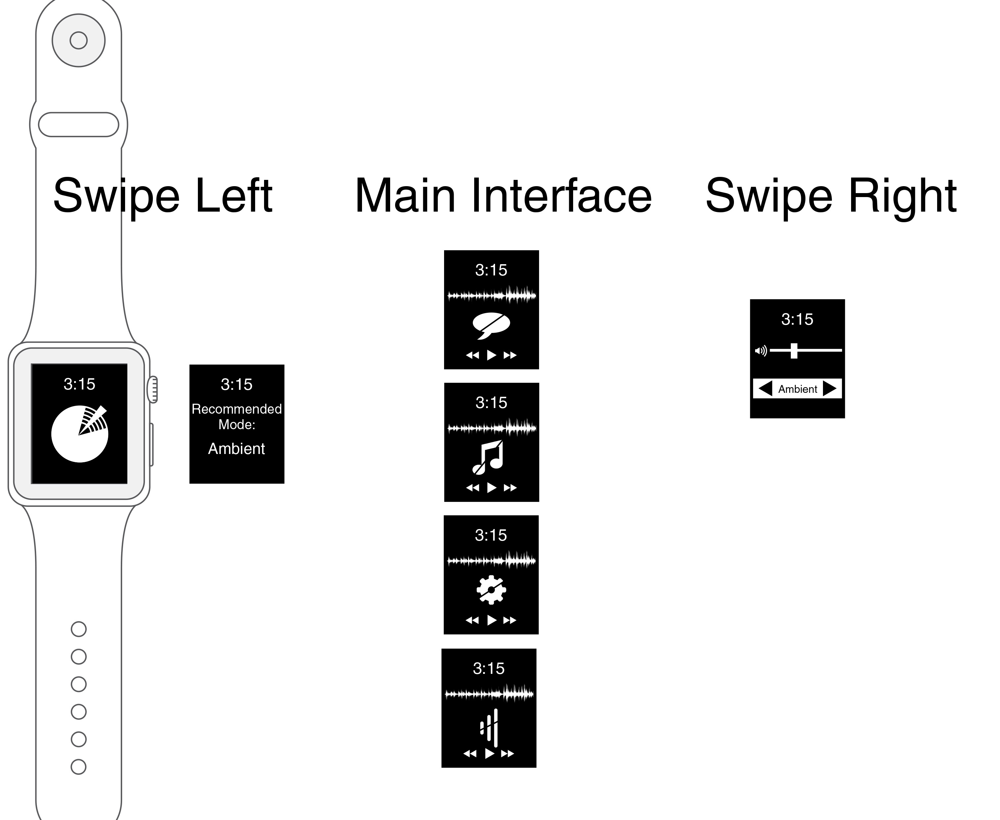
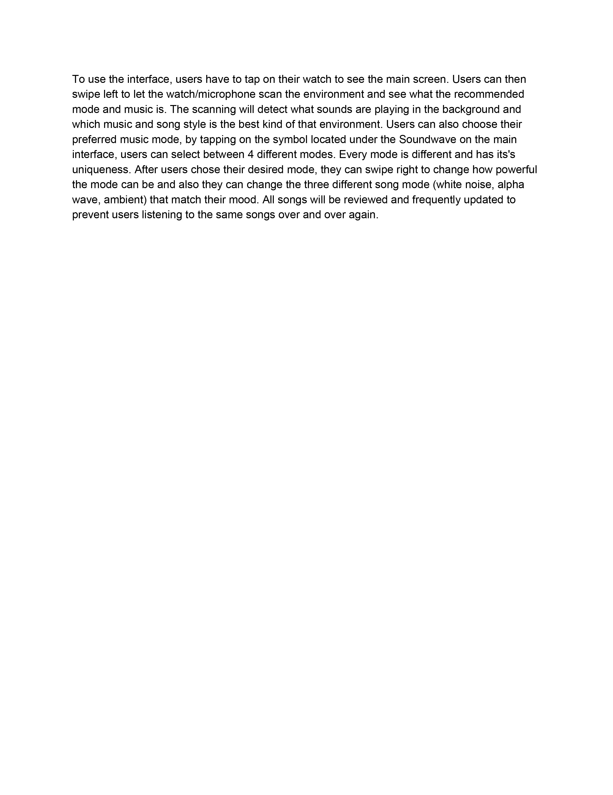

Lead User: Corrin is a UCSD student who likes to study in quiet places like Geisel. However, one day she finds out that there is no space in Geisel, so she tries to find a place that isn’t crowded and ends up studying in Starbucks. The music in the background, the table of people next to her, and the coffee machines are all too loud, so Corrin has a hard time focusing. She can’t use noise canceling headphones because they make her dizzy, so she has no choice but to blast music in her earbuds, which hurt her ears.
Task: Corrin needs a way to focus on her studies while trying to block out a loud environment.
PDF:


USER FLOW:
